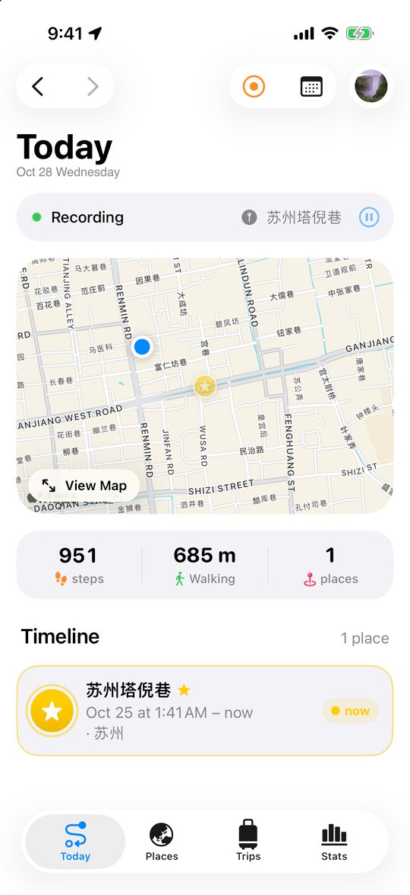
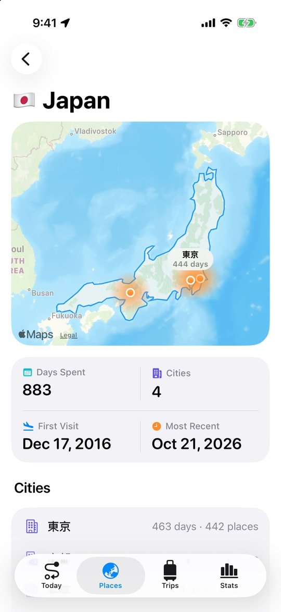
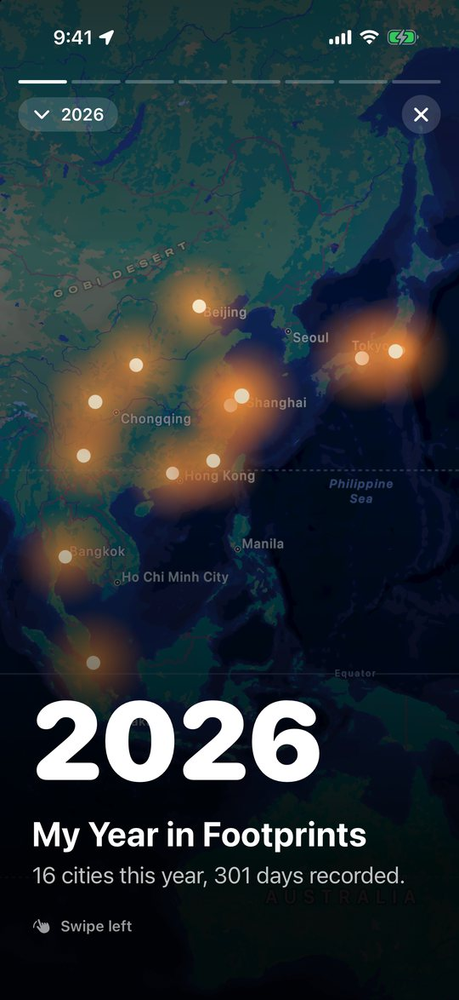
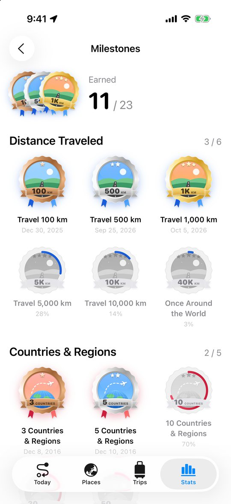

漫迹 · Waytrace
不用打开，不用记得按开始。你走过的路，它都替你记着。
No need to open it, no need to press start. It remembers every road you take.




🗺️ 全天自动记录
轨迹、停留的地点、城市和国家，口袋里的手机就够了。
Records your day by itself, in your pocket.
📸 从相册点亮过去
用照片的拍摄地点，补上以前去过的地方。
Lights up past places from your photos.
🌏 你去过的世界
点亮地图、国家和城市、一段段行程与旅程。
Your countries, cities, visits and trips.
✨ 年度足迹
每年一份可以分享的足迹故事和插画奖牌。
A year-in-review story and illustrated medals.
⌚ Apple Watch
不带手机也能记录徒步、跑步和骑行。
Record hikes, runs and rides from your wrist.
🔒 只属于你
没有服务器，数据只在你的设备和 iCloud。
No server. Your data stays in your iCloud.
帮助与反馈 · Support
有问题或建议，请发邮件给我们，通常会在两个工作日内回复。
Questions or feedback? Email us; we usually reply within two working days.